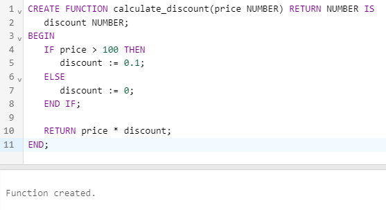

Functions
Functions are named PL/SQL blocks that can be called with arguments. They return a single value, which can be of
any PL/SQL datatype. Functions are similar to procedures, but they return a value and can be used in SQL
statements.
- Named Functions: These functions are defined in a PL/SQL block and can be called in the same
block or from other blocks. They can have parameters and return values.
- Stored Functions: These functions are stored in the database and can be called from anywhere in
the database. They can have parameters and return values.
Syntax of Named Function
A named function has the following syntax:
CREATE OR REPLACE FUNCTION function_name (parameter1 datatype, parameter2 datatype, ...) RETURN
return_datatype IS
BEGIN
-- function code goes here
END function_name;
Syntax of Stored Function
A stored function has the following syntax:
CREATE OR REPLACE FUNCTION function_name (parameter1 datatype, parameter2 datatype, ...) RETURN
return_datatype IS
BEGIN
-- function code goes here
END function_name;
Example :
